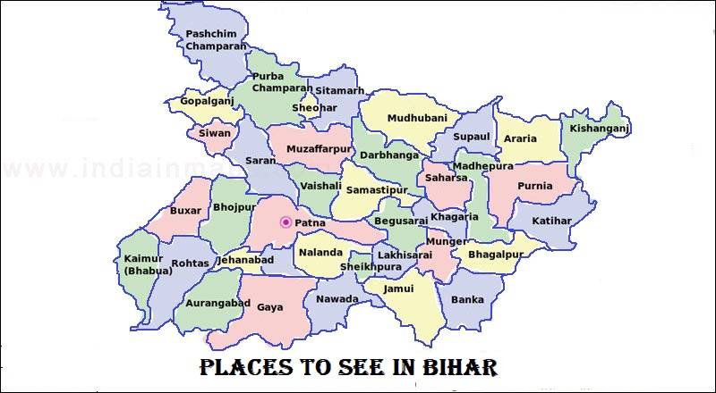

LET'S HAVE A LOOK AT THE TOUR MAP
WHERE TO VISIT , WHAT TO SEE?
SOME HOT PICKS (#HAVE_TO_VISIT)
- GAYA - HINDU PILGRIMAGE HUB AND A TRANSIT POINT
FOR BUDDHIST PILGRIMAGE CENTER OF BODH GAYA - PATNA - IMPORTANT EN-ROUTE TO MAJOR PLACES LIKE GAYA , RAJGIR
- NALANDA AND RAJGIR - RUINS OF THE FIRST UNIVERSITY , GREAT STUPA
- VAISHALI - SITE OF GAUTAM BUDDHAS LAST SERMONS , WORLD'S FIRST REPUBLIC
- MADHUBANI - RICH IN ART AND CULTURE
- MUZAFFARPUR - LITCHI KINGDOM
- BHAGALPUR - SILK CITY , MAJOR EDUCATION CENTER
- PAWAPURI - HOLY SITE FOR THE JAINS , JAL MANDIR
- LAURIYA NANDANGARH - ASHOKAN PILLAR (40 PILLARS BUILT BY KING ASHOKA)
- VALMIKI - NATIONAL PARK
- TOMB OF SHER SHAH SURI
- NAVLAKHA PALACE - ROYAL PALACE OF HERITAGE
SOME_OTHER_ATTRACTIONS
- HAJIPUR - SMOOTH TRANSIT OF PAST AND PRESENT
- SITAMARHI - BIRTHPLACE OF WIFE OF LORD RAMA, SITA